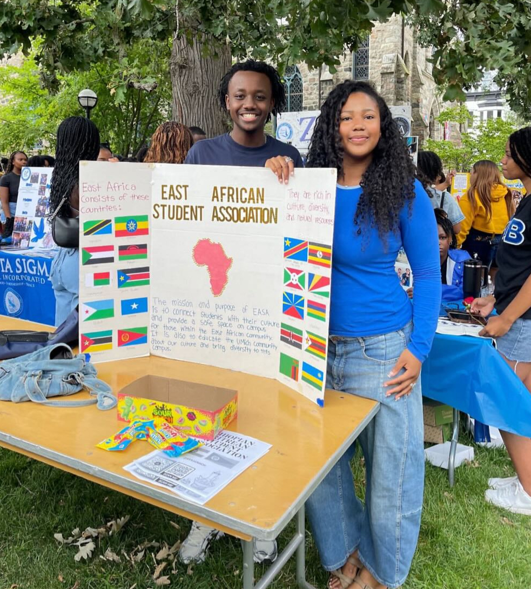
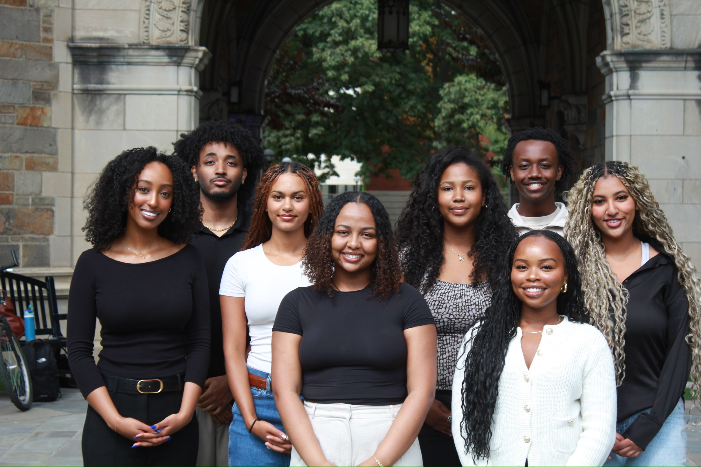
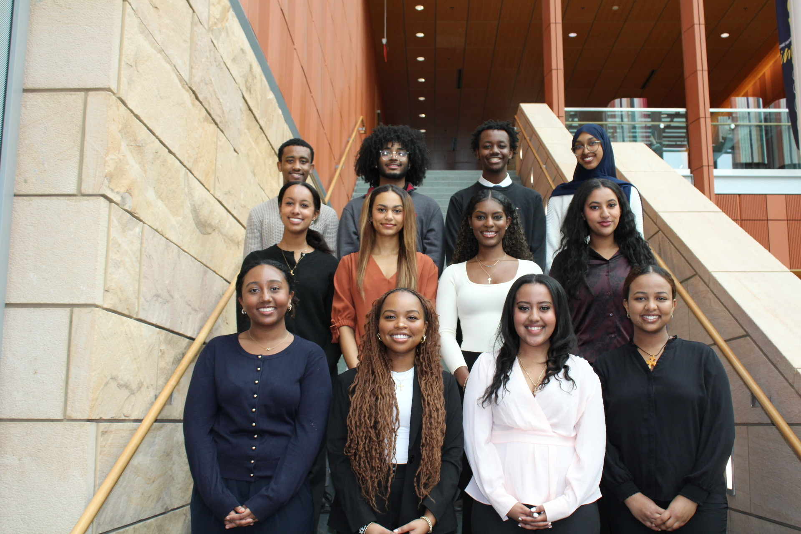
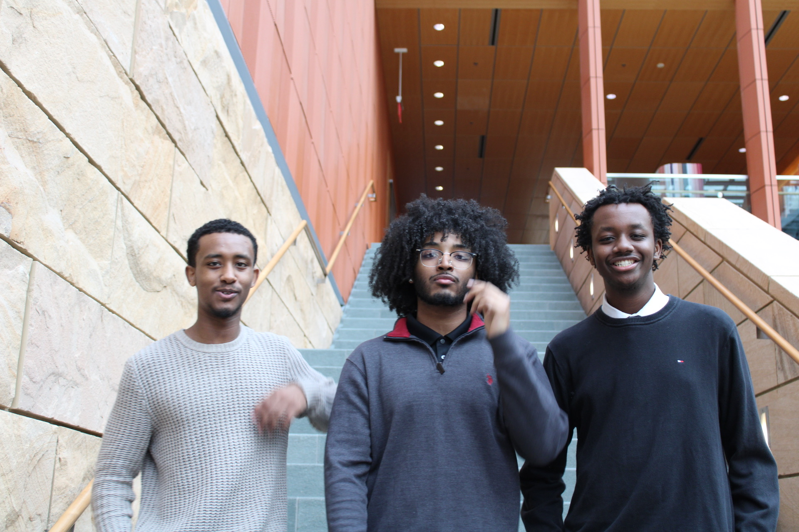

Two organizations co-founded, three boards served, and a handful of commitments that have nothing to do with a resume line.
Kappa Omega Alpha
Vice President, Internal Operations · 2026 to Present
Pre-Law and Public Policy Professional Co-Ed Fraternity at the University of Michigan. I plan and execute professional development programming, coordinate treks to law firms and consulting organizations, and manage internal chapter operations. I created the UMLC legal case competition and conference, which brings pre-law students from across campus together for a competitive advocacy experience.
Chapter board, 2026Joint alumni panel, April 2026Between sessions, Ross
I co-founded EASA to create a dedicated community for students of East African descent at Michigan. As founding president I built the organization from nothing: recruiting an executive board, establishing event programming, coordinating cultural collaborations with other campus organizations, and working with university administration to secure recognition and resources. EASA is now a space for community, cultural celebration, and professional connection.

Where it started, Festifall

Executive board

Full board, 2025

The founding group
Michigan Business Law
Research Associate and DEI Chair · 2024 to 2025
A student organization at Michigan's Ross School of Business focused on legal and financial research. I contributed to the organization's research publications, producing formal legal analysis and macroeconomic updates. As DEI Chair I helped shape recruitment and programming to broaden participation in business law education.
Served on conference committees and contributed to the formal record of debate and resolutions. This one was about giving back: I first attended MUNUM as a high school student, and that conference is a large part of why I ended up interested in policy and international relations at all.
Selected for Michigan's PSIP DC Cohort, a competitive program placing students in public service internships in Washington, D.C. with structured professional development, mentorship, and funding support. One of a small cohort chosen for the DC placement.
I organize programming, speakers, and networking events supporting students pursuing law school and legal careers at Michigan. The goal is straightforward: make the path to law school less opaque for people who do not already have lawyers in their family.
Support for Incoming Black Students
Peer Mentor · Ongoing
I mentor incoming Black students at Michigan as they navigate the transition to campus, find community, and access resources. This is one of the most personally meaningful commitments I have here.
I volunteer regularly at Michigan's student food pantry, and at soup kitchens in Detroit. Food insecurity on a campus this well resourced is not an abstraction; roughly one in three students nationally experiences it. This is the commitment that keeps me grounded.